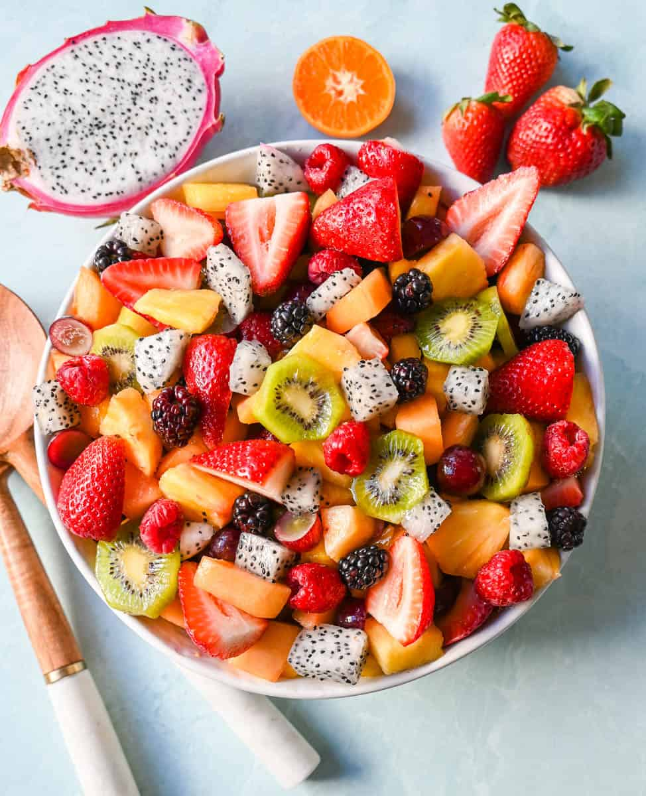

Fruit Salad

Description
You'll find a detailed ingredient list and step-by-step instructions in the recipe below, but let's go over the basics:
Fruit salad Ingredients
- For the sauce: fresh orange and lemon juices, brown sugar, grated orange and lemon zests, and vanilla extract.
- The fruit you'll need: pineapple, strawberries, kiwis, bananas, oranges, grapes, and blueberries.
- Note: Of course, this is a super customizable recipe — you can omit certain fruits or add other fruits to suit your taste and what you have on hand!
How to Make Fruit Salad Step-By-Step
Here's a very brief overview of what you can expect when you make homemade lasagna:
- Make the sauce on the stove and let it cool.
- Arrange the fruits in a container, then pour the sauce over them.
- Cover and refrigerate to allow the flavors to meld.